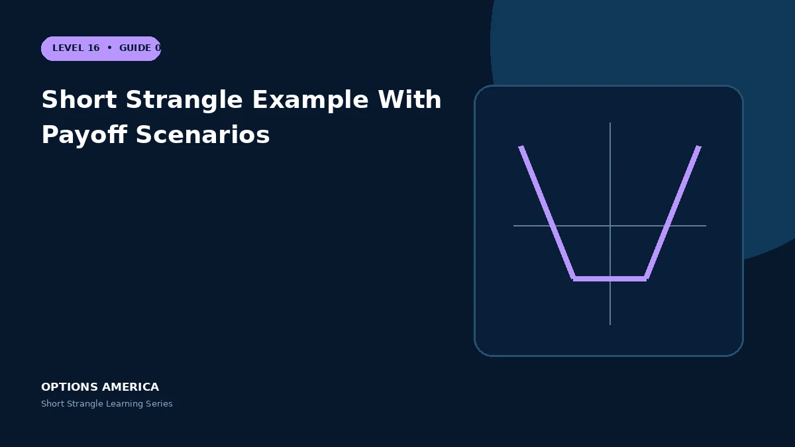

Follow a short strangle through prices inside the strikes, at breakeven and beyond the expected range.
Open the trade
Stock trades at $100. Sell the 90 put for $2.40 and the 110 call for $2.10. The total credit is $4.50, or $450 per standard strangle.
Inside the strikes
At expiration prices from $90 through $110, both options are OTM or exactly at the money and the full $450 credit remains before costs.
Between strike and breakeven
At $113 the call has $3 intrinsic value, leaving $1.50 per share of profit. At $114.50 the call exactly consumes the full credit.
Tail outcome
At $125 the call has $15 intrinsic value. After the $4.50 credit, loss is $10.50 per share, and continued upside keeps increasing the loss.
A practical example
Approximate expiration P&L at $80, $88, $100, $112 and $125 is −$550, +$250, +$450, +$250 and −$1,050 before costs.
This simplified scenario focuses on selected outcomes; live prices and risks will differ. Live option prices also reflect the underlying price, time decay, rates, dividends, liquidity and transaction costs. Greeks are theoretical estimates, not guarantees.
Build a risk-first trading plan
Before using short strangle example with payoff scenarios, record the stock price, put and call strikes, expiration, total credit and contract multiplier. Calculate both breakevens, then estimate dollar loss beyond them under upside and downside gaps. A wide strike range improves the starting room but does not define either tail.
Stress several prices, time points and volatility levels, including a skew change that affects the put and call differently. Review delta, gamma, theta, vega and buying power for the complete portfolio. Multiple OTM positions can become tested together during a common market shock.
Define a profit target, maximum tolerated loss, tested-side trigger, margin reserve and latest exit date before entry. Decide whether an event is intentionally included and how assignment would be handled. Use multi-leg orders and confirm quantities after every fill, roll or partial close.
Document the result after exit, including slippage, assignment effects and the largest intraday exposure. Comparing the original forecast with the actual path helps distinguish a sound process from a lucky outcome and improves later strike, duration, margin-reserve and position-size choices under similar market conditions.
Frequently asked questions
Why is profit flat between strikes?
Both options expire worthless.
Can the position be closed early?
Yes, preferably as a two-leg order.
Which side loses at $125?
The short call.
Continue the Short Strangle cluster
Explore related guides: How to Choose Short Strangle Strikes · Implied Volatility and the Short Strangle · How to Adjust a Short Strangle. For a structured sequence, use the free Level 16 – Short Strangle course.
Options involve risk and are not suitable for every investor. This material is educational and is not investment, tax or legal advice. Greeks are theoretical estimates, and contract terms and broker requirements can vary.